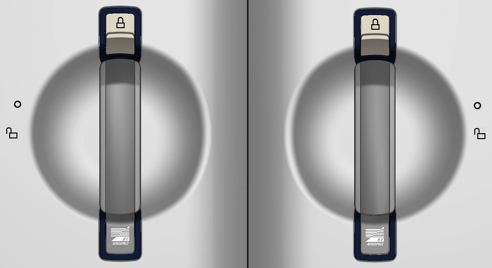
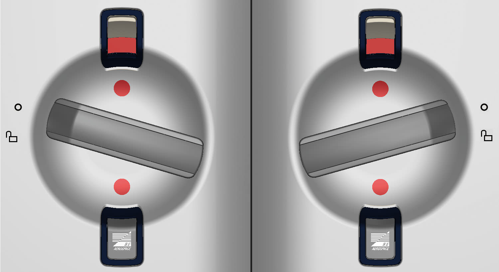
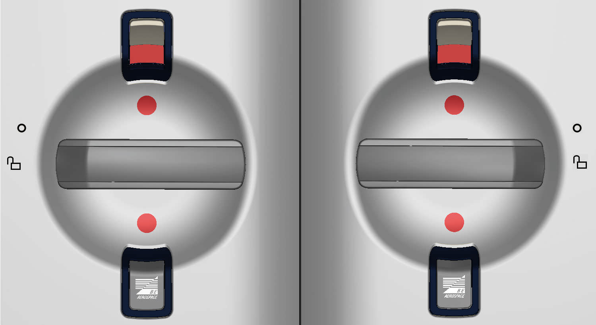

ESSENCE® Tri-Mode Chiller
ESSENCE® Tri-Mode Chiller
DOOR OPERATIONS
HOW TO OPEN THE DOOR

LH - CLOSE/LOCK POSITION
RH - CLOSE/LOCK POSITION
Lift the secondary latch in the upper position.

LH - SAFE POSITION
RH - SAFE POSITION
In the SAFE position, the door is mechanically locked, however the unit should never be operated in this position as it will reduce food cooling and will create condensation.

LH - OPEN POSITION
RH - OPEN POSITION
Turn the primary door latch to the OPEN position and open the door to load or remove the content.
WATCH THE VIDEO